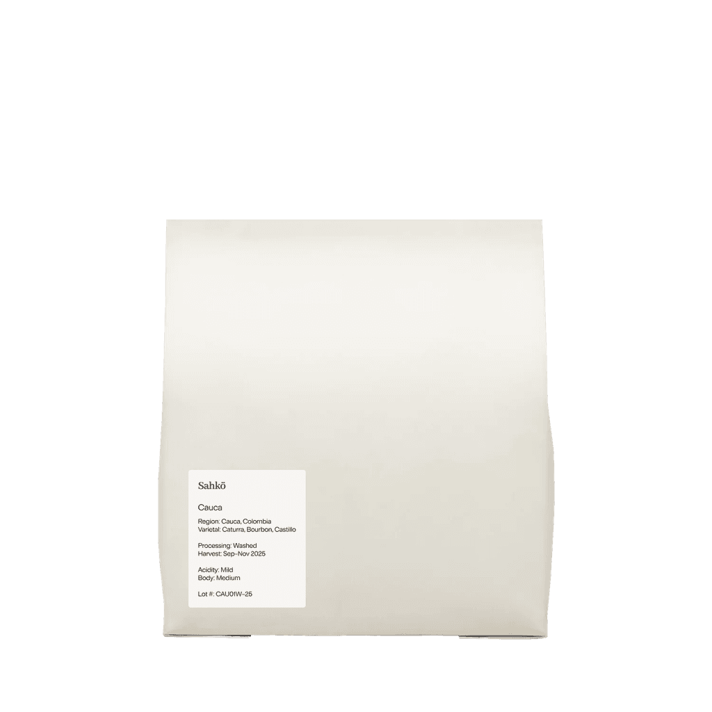
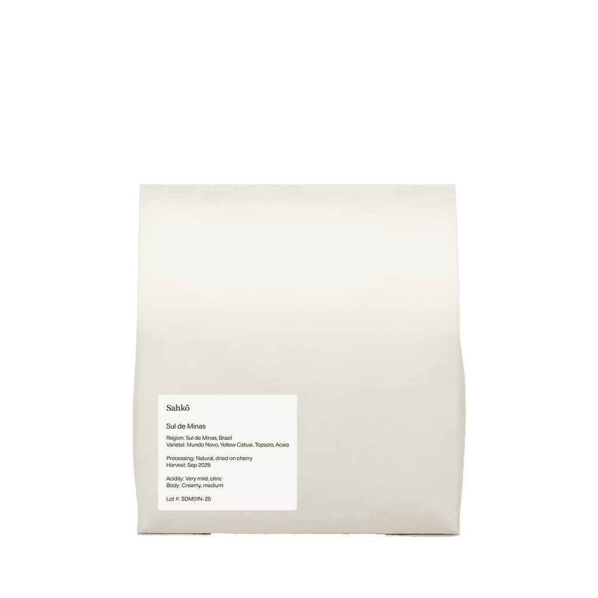

Cerrado · 1 / 6
Cerrado, Minas Gerais, Brazil · Natural
Explore
Natural · Single Origin · Lot CER01N–25
A sun-grown natural from the Cerrado plateau. Smallholder lots cultivated on deep, well-drained latosol soils across savannah terrain. Defined wet and dry seasons and abundant sunlight allow uniform on-tree maturation and clean patio drying with fruit intact.
Tasting notes Cocoa, Sultana, Almond, Demerara